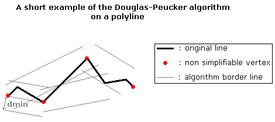
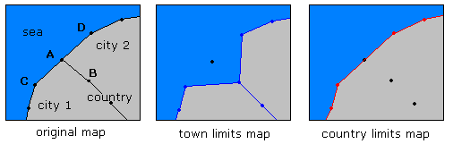

Map Simplification Program (version 2.1)- Documentation
Introduction
Generally, vectorial maps have a large number of points. The more accurate they are, the more they require time to be displayed. Moreover,
when the zoom level is higher than the precision of the map - for instance, when you
display a whole country with a map based on its city limits - it could be useful to simplify the map
by deleting some points which are invisible due to the zoom factor.
From now, some algorithms already exist which simplify polylines such as the Douglas-Peucker algorithm. However, here comes two main problems with vectorial map simplification :
From now, some algorithms already exist which simplify polylines such as the Douglas-Peucker algorithm. However, here comes two main problems with vectorial map simplification :
- A polyline (a border in a common map language) is generally shared by at least two elements. For example, a border can separate towns, districts, countries.
- Vectorial maps are often grouped in many layers, sharing their points. For instance : a group composed of a world map layer, a country map layer, a city limit map layer. The most accurate is obviously the last one but after every simplifications, each map should always be superimposable.
What's new in this version ?
- We simplified the process with embedding the simplified geometry in a new column in the same table. We don't use inherited tables anymore.
- We use now a lex/yacc processor in order to decode geometry.
- We use 2 separate processes in order to create a vertex table and then to simplify.
Requirements
Configuration
Installation
Files
- Install the pl/sql function 'vertex' from func.sql
- Check/Install psycopg and PLY modules
Files
- simplify.py
- vertex.py
- polyLex.py
- polyYacc.py table
- func.sql
- ChangeLog
- Credits
- License
- ReadMe
- TODO
- css/style.css
How it works
This section will explain how the algorithm has been created and how it works.
Basically, you will have to choose the most detailed map as the basic map to create the vertex table. Then, all simplifications in your project will use this table to create new maps. One last important point is that there are as many vertex tables as there are different minimal distance values for the algorithm.
From now, every map should shared the same points. In other words, map must be superimposed and in addition, a map with a higher level should not have points which do not belong to the original map used to create the vertex map.
Now, the program will extract each polygon from your table and store each vertex found in a table named "vertex" concatenated with the minimal distance value - eg - vertex5000, vertex2500 etc ... Let's explain the columns of this table :
Then, the program is inspired by the Douglas-Peucker algorithm on each polygon to find which vertex should not be simplifiable. The following picture explains briefly how our algorithm works out.

To explain shortly the way the algorithm simplifies each points : it creates a cylinder around a series of vertex of the polygon
with the minimal distance value as the radius. Next, every vertex which do not belong are marked as non simplifiable and the cylinder
moves every iterations. Due to this process, each polygon are well-simplified : a vertex is not simplified if it is required by at least one of the
polygons.
Here's an example :
Moreover, a problem appears on every borders of each maps :

As you can see, if the vertex A is simplifiable and, as the vertex B does not belong to the country limits map, those two maps
become non-superimposable. Therefore, we worked on it and every points which are at the same position as vertex A are automatically
set as non simplifiable vertex.
Basis
Let's start explaining how your project should be before launching the algorithm. Your map data should be in a Postgres database with a Postgis geometry column.Basically, you will have to choose the most detailed map as the basic map to create the vertex table. Then, all simplifications in your project will use this table to create new maps. One last important point is that there are as many vertex tables as there are different minimal distance values for the algorithm.
From now, every map should shared the same points. In other words, map must be superimposed and in addition, a map with a higher level should not have points which do not belong to the original map used to create the vertex map.
Creating a Vertex Table (vertex.py)
First, you have to choose the geometry table which contains the largest number of vertex. For example, if you have two tables in your database sharing their points : city limits and country limits, the one you will have to choose is the former one.Now, the program will extract each polygon from your table and store each vertex found in a table named "vertex" concatenated with the minimal distance value - eg - vertex5000, vertex2500 etc ... Let's explain the columns of this table :
- id (integer) : the primary key
- x and y (integers) : the coordinates
- nref (integer) : the number of polygons sharing this vertex
- simplif (boolean) : true if the vertex is simplifiable
Then, the program is inspired by the Douglas-Peucker algorithm on each polygon to find which vertex should not be simplifiable. The following picture explains briefly how our algorithm works out.
python vertex.py -H hostname -u user name -p password -d base name -t table -v vertex schema -i id column name -g geometry column name -m minimal distance value
Map Simplification
When a vertex table is created, we can run the map simplification process. For each table to be simplified a new geometry column (named the original name + the simplification distance) is created and filled with polygons composed of vertice that can be simplified in respect with the vertex table. Because all maps are sharing the same simplified vertex table, each simplified maps are superimposable. Here's an example :
simplify.py -H hostname -u user name -p password -d base name -v vertex table -t table -i id column -g geometry column -m minimal distance value
Tricks
We add a few features in order to have maps more attractive. For instance, when a vertex is shared by at least three polygons - eg - its nref is greater than or equal to 3, we consider it as a non simplifiable vertex.Moreover, a problem appears on every borders of each maps :
Known Problems
In some cases, especially when the distance entered for simplification is of the same order than the dimension of the polygons to be simplified, weird geometries can be generated.FAQ
Let's resolve your frequently asked questions ? ;)
- My maps are currently in shapefile format, how could I put them into my Postgres database ?
You just have to use the shp2pgsql and psql function on your favorite shell console.
- My maps are currently in shapefile format, how could I put them into my Postgres database ?
You just have to use the shp2pgsql and psql function on your favorite shell console.
- shp2pgsql name_shapefile name_table name_database > ~/name_table.sql
- psql -d name_database -f ~/name_table.sql
Developers
Map Simplification Algorithm is Open Source, so feel free to contribute to it. If you are
planning to continue this program, please read the following information :
- try to keep the code as simple as possible in order to be easily reusable.
- do not forget to update the ChangeLog file if you write or rewrite anything
Credits
How did this project start ?
- Laurent PIERRE <laurent.pierre@edf.fr>
- creator of the map simplification project
- wrote the original script
- Damien GARZILLI <garzilld@esiee.fr>
- rewrote and optimized the script
- bugfixes and improvements